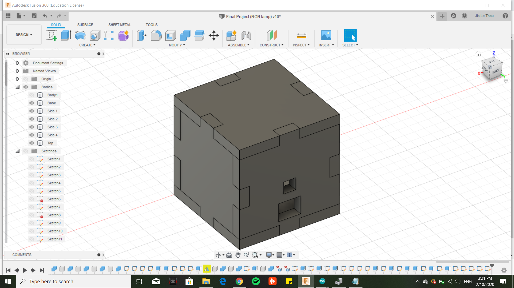
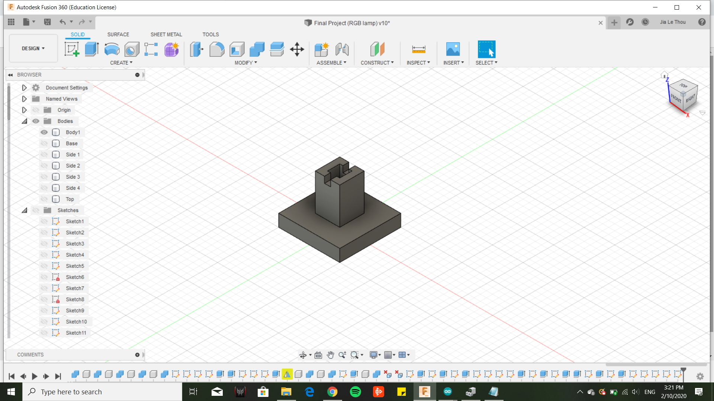
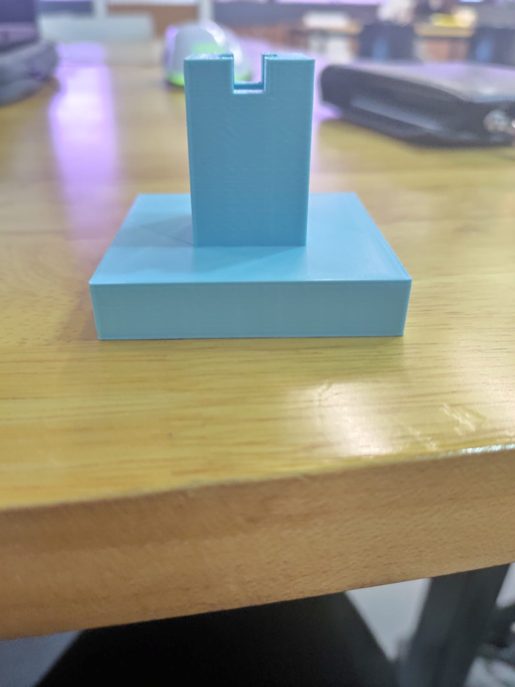
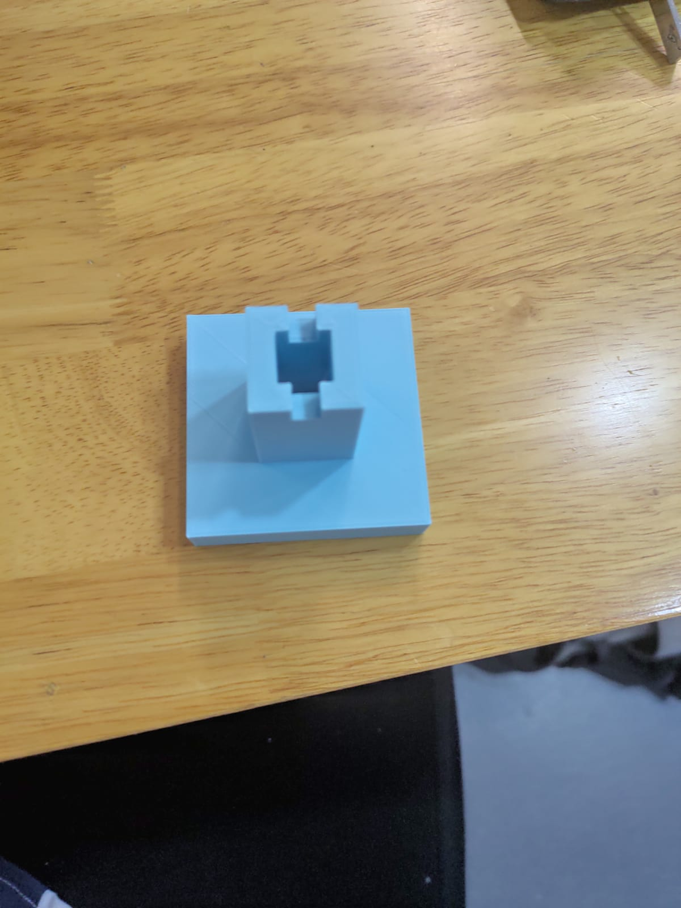

Home Page
Welcome to My Website
This website shows all the things that i have learnt from DFAB
For the project, we will be working in groups of 4.My group consists of Me,Jia Le,Fraser and Diyana
My group has decided to create a rgb lamp that looks like this

I did all the parts that needed soldering.Using a soldering iron, i soldered the wires to an arduino board which was soldered to a strip board so that the wires will not slip out and break the circuit.


Me and Jia Le also came together to do the laser cutting parts of the project.We made a transparent casing to allow the light to pass through and contain all the electronic parts of the lamp
When we laser cutted the first prototype,there was a few errors.First of which was the material that was used.We accidentally used wood as the material but it was alright because we made another error so we had to redo it anyways.The dimensions of the prototype was too small and we had to double the size in order to fit all the electronic components.

Diyana did the 3d printing part of the project.She created the base of the lamp  
Fraser did the video and poster .